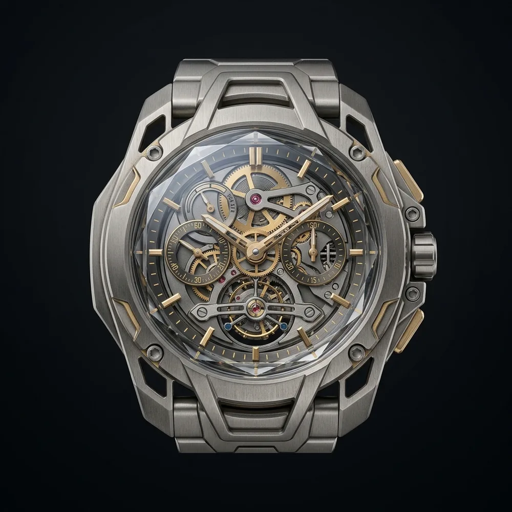
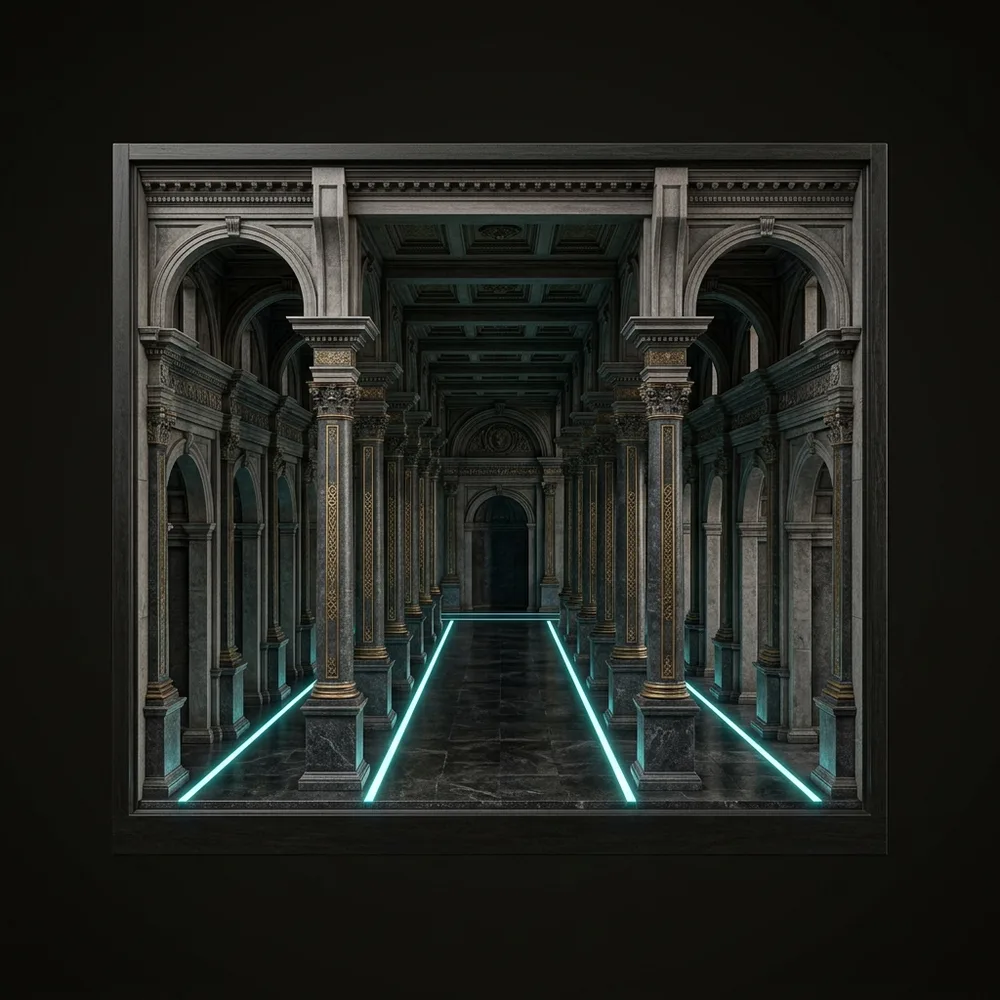
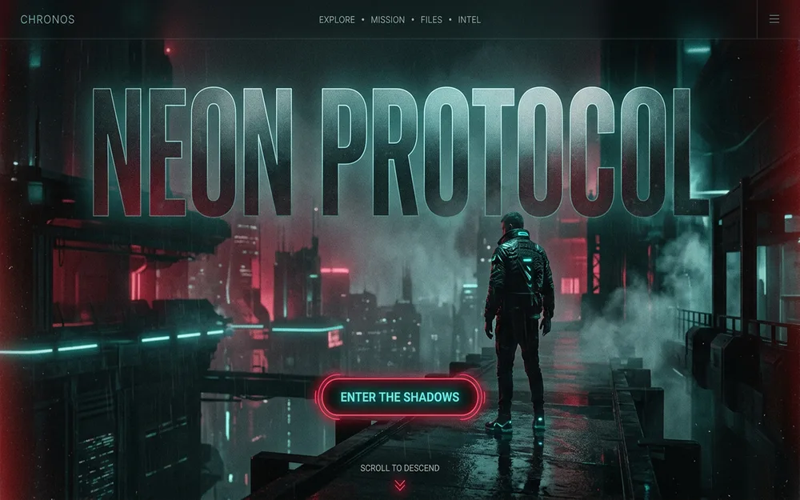

Independent design atelier
Three partners, no juniors, one rule: every pixel earns its place. Selected work below — slow scroll recommended.
Scroll — 01 / 03


The rule of the house
Restraint is the loudest thing we make.